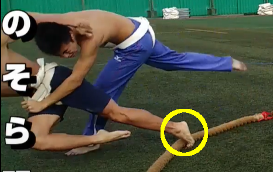
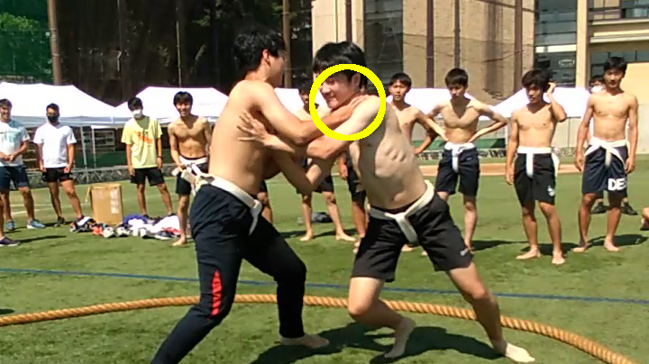

相撲予選会における判定変更のお知らせ
予選第１日第２戦
東海道対はれのそら明朝について

上の画像の時点で東海道選手の体は地面についていませんがはれのそら明朝選手の足が地面についていたため東海道選手の勝ちとします。また、東海道選手の体は傾いてはいますが足が地面とついている、さらにつま先が上を向いていないため「死に体」ではないと判断しました。以上を持って体育祭本戦に出場するのは東海道選手です。
予選第２日第１戦
玄界灘対スーパーサイ安井について

予選2日目第一試合は、行司の判断では、玄界灘の勝利と判定しましたが、覆っています。
上の画像のように、玄界灘選手はスーパーサイ安井選手の首から上を攻撃する行為を一定時間継続しており、玄界灘選手の反則負けと判定しました。よって、スーパーサイ安井選手の勝ちとなります。
以上、予選会のその場での判定が間違っていたことを深くお詫び申し上げます。
ただし、体育祭当日の勝敗は行司が決めたものをその場で最終判定とし、その後再検討は致しません。ご理解とご協力をよろしくお願いします。
体育委員長 榊谷貫人